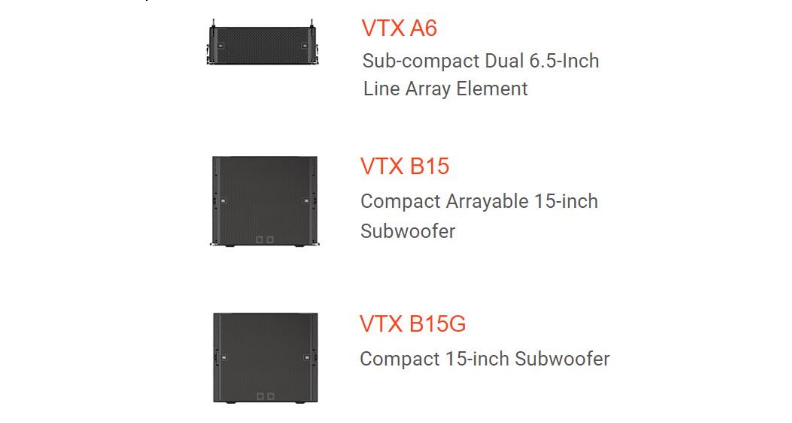

JBL Professional Solutions Debuts the JBL VTX A6 Line Array Element and B15 Compact, Arrayable Subwoofer
July 26, 2022

HARMAN Professional Solutions, the global leader in audio, video, lighting and control technologies, today introduced the newest members of JBL’s flagship VTX line array series, the VTX A6 subcompact dual 6.5-inch passive line array element and the B15 compact, arrayable 15-inch subwoofer.
The A6 and B15 bring JBL’s top acoustic technologies to compact form factors for small- to medium-size touring and fixed installations, providing versatile solutions for production companies, touring acts, rental houses, theaters, houses of worship and anyone who requires superior sonic performance in space-critical applications.
“When you choose the JBL VTX A Series, you’re building a complete ecosystem, with common acoustic profiles and rigging systems, consistent voicing and standardized system design and operational tools,” says George Georgallis, Director, Product Management– Performance Audio at HARMAN Professional Solutions. “And, by accessing VTX technologies in a new ultra-compact package, you’re able to maximize your system investment and deliver VTX quality and performance in any scale application.”
The A6 6.5-inch passive two-way line array element is engineered from the ground up for stunning sonic performance and ease of integration and deployment, as a standalone system or as a supplement to larger VTX systems. It houses two custom 6.5-inch woofers and a 3-inch annular-diaphragm compression driver and features acoustic innovations pioneered in JBL’s VTX line, including JBL’s patented Radiation Boundary Integrator™ (RBI) and Differential Drive® dual-voicecoil, dual-magnet woofer. It all adds up to big-system performance in a low-profile loudspeaker, with low-frequency extension to 67 Hz and 134 dB max SPL.
Extend the low-end range of VTX full-range systems with the VTX B15 15-inch subwoofer. The B15 features acoustic advancements such as SlipStream™ double-flared exponential ports and Differential Drive dual-voicecoil design and is based on JBL’s new 2285H 15-inch woofer, which is engineered for linearity, efficiency and excursion that rival 18-inch models. Two B15 versions are available: the arrayable B15 and the B15G, which is designed without rigging hardware for ground-stacked applications.
Both the A6 and B15 are designed for versatile rigging and effortless system integration. The A6 uses the VTX A Series’ patented rigging system for accurate, easy deployment. Set splay angles while components are on the ground; once the system is suspended, a locking mechanism automatically secures cabinets in designated positions. The B15 has the same cabinet width and suspension hardware as the A6, allowing the two products to be used together in flown and ground-stacked configurations; the B15 supports cardioid array configurations.
Streamline system operation and share information with teams in real time using JBL’s suite of software tools, including the LAC-3 design application, the Array Link deployment tool and the Performance Manager configuration and control application. Simple, intuitive user interfaces let users design systems in minutes and manage functions from anywhere. JBL VTX A Series products are constructed from premium materials that withstand the harsh conditions of touring and outdoor installations. Enclosures are built from exterior- grade birch plywood with black Duraflex finish and feature powder-coated, hex-perforated stainless steel grilles with acoustically transparent cloth backing. Units are IP55-rated and metal parts are made from high-grade steel with anti-corrosion coating.
With the addition of the A6 and the B15, the JBL VTX Series offers a complete ecosystem for delivering unrivaled sound reinforcement at any scale, in any venue, anywhere in the world.
Click here to read more.